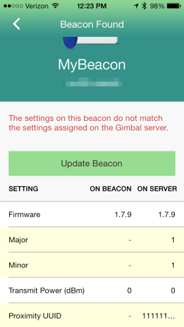

If you haven't done it yet be sure to check out the iOS Quick Start Guide to get the SDK installed and running.
This document describes how to use the Gimbal framework to develop iOS applications that can benefit from contextual Services.
The QLContextCoreConnector must be enabled prior to using any other Gimbal features.
All calls to the API will return failures with a disabled status message until this step is complete.
The enableFromViewController:success:failure: method is used to enable the SDK for use by the end user.
Note: This call is asynchronous and use objective-c blocks to return results when they are available.
QLContextCoreConnector *contextCoreConnector = [QLContextCoreConnector new];
[contextCoreConnector enableFromViewController:self.window.rootViewController
success:^{
NSLog(@"Gimbal enabled");
}
failure:^(NSError *error) {
NSLog(@"Failed to initialize gimbal %@", error);
}];
The checkStatusAndOnEnabled:disabled: method allows your application to ensure that it has been previously enabled.
Note: This call is asynchronous and use objective-c blocks to return results when they are available.
[contextCoreConnector checkStatusAndOnEnabled: ^(QLContextConnectorPermissions *contextConnectorPermissions) {
NSLog(@"Already enabled");
}
disabled:^(NSError *error) {
NSLog(@"Is not enabled");
}];
[contextCoreConnector deleteAllUserDataAndOnSuccess:^{
NSLog(@"User data deletion SUCCESS");
}
failure:^(NSError *error) {
NSLog(@"User data deletion FAILURE: %@", error );
}];
By default, when you enable the SDK using enableFromViewController:success:failure: a Gimbal branded dialog containing the end user consent, privacy notice and terms of service will be presented to the end user.
However, you have the choice to display your own privacy notice and end user opt-in consent in lieu of the Gimbal branded dialog.
Important You will be bound by the "White Label Mode" terms within the Gimbal Developer Agreement.
To use this feature, simply add the property CUSTOM_OPT_IN_FLOW: YES to UserContext.plist file.
Developer can use this option to enable debug mode which will add a debug user interface on the privacy panel. Debug panel will give you access to the following.
Important Please do not enable this in your production application.
You will be able to use this feature by adding a property SHOW_DEBUG_PANELS: YES to UserContext.plist file.
self.contextPlaceConnector = [[QLContextPlaceConnector alloc] init];
Implement didGetPlaceEvent method to listen for place events. Gimbal SDK will call this method when it detects Entry/Exit for a place
- (void)didGetPlaceEvent: (QLPlaceEvent *)placeEvent
{
// do something with the place event
}
The following fields are available in the QLPlaceEvent passed to the listener:
| Field Name | Description |
|---|---|
| placeType | QLPlaceTypeOrganization refers to places created in Context Console and applies to all of your users. QLPlaceTypePrivate is created locally on the phone and only applies to a single user. |
| eventType |
QLPlaceEventTypeAt means that the user has arrived at the place
QLPlaceEventTypeLeft means that the user has just left the place.
|
| Place |
The QLPlace object associated tot he event.
|
| Time | The time of the event in milliseconds since 1970 (See System.currentTimeMillis()) |
The Gimbal SDK does not support place monitoring on devices such as the iPhone 3GS due to the hardware not being battery efficient to continually monitor geofences in the background. To determine if the device supports place monitoring, call the "isPlaceMonitoringAvailable" on the QLContextPlaceConnector to see if the current device supports place monitoring.
We detect "AT" events more quickly than "Leave" events. The system needs sufficient evidence to promote a "Leave" event to be statistically accurate. False "Leave" events happen because location fixes on today’s smartphones tend to bounce around. (Open a map application on your phone and watch the blinking cursor bounce around.) We work to eliminate these inaccuracies to ensure your end-user does not receive multiple incorrect events.
The Gimbal Proximity platform enables proximity services within your application. This guide will provide examples for each of the available functions in our iOS SDK for Gimbal Proximity.
If this is your first time working with the Proximity Framework visit the Proximity Overview »
To get the SDK installed and running checkout the iOS Quick Start »
Note Across all documentation and SDKs the terms 'Beacon' and 'Transmitter' are interchangeable
These calls allow for enabling and disabling the location updates which are used to provide extra information to a sighting callback. By default location updates are enabled and need to be explicitly disabled.
Important If you want to guarantee that end-users are not prompted to enable Location Services, make sure you disable location updates before you set the application ID.
Note You can also use options to set different location modes when enabling location updates. The following modes are supported. .
| Key | Value | Description |
|---|---|---|
| FYXLocationModeKey | FYXLowPowerLocation | Uses the cached location from the location Manager. Default Mode |
| FYXLocationModeKey | FYXHighAccuracyLocation | Queries location manager for location Updates |
| FYXLocationModeKey | FYXNoLocation | No location updates |
#import <FYX/FYX.h>
...
//disable location udpates
[FYX disableLocationUpdates];
//enable location updates. Uses Low Power location by default.
[FYX enableLocationUpdates];
//enable location updates with options
NSMutableDictionary *options = [[NSMutableDictionary alloc] init];
[options setObject:[NSString stringWithString:FYXHighAccuracyLocation] forKey:FYXLocationModeKey];
[FYX enableLocationUpdatesWithOptions:options];
This call sets up the SDK with the application ID and Secret. When you register an application on the Developer Portal the ID and Secret are generated and supplied to you.
#import <FYX/FYX.h>
...
[FYX setAppId:@"your-app-id"
appSecret:@"your-app-secret"
callbackUrl:@"your-callback-url"];
This call registers the application with the server and starts bluetooth scanning. It does NOT authorize the user of the app. The authorization protected APIs will not function unless you use "authorize" instead.
#import <FYX/FYX.h>
...
[FYX startService:myServicedelegate];
Note You must add the <FYXServiceDelegate>
protocol to your class.
Once the service start has been attempted by calling startService: above, one of the
following methods will be invoked on your delegate object once the status of the service has been
determined.
#import <FYX/FYX.h>
...
- (void)serviceStarted
{
// this will be invoked if the service has successfully started
// bluetooth scanning will be started at this point
}
#import <FYX/FYX.h>
...
- (void)startServiceFailed:(NSError *)error
{
// this will be called if the service has failed to start
}
This call will stop bluetooth scanning.
#import <FYX/FYX.h>
...
[FYX stopService];
Important The SDK will no longer function properly until you call startService again.
This call dissociate a device and data (visits and sightings) reported by the application running on that device. The open visits and sightings gets closed on server. Data (visits and sightings) on device also gets cleared due to this API invocation.
#import <FYX/FYX.h>
...
[FYX deleteVisitsAndSightings];
Note You must add the <FYXSessionDelegate>
protocol to your class.
Once the deletion visit and sightings data has been attempted by calling deleteVisitsAndSightings
above, one of the
following methods will be invoked on your delegate object once the status of the service invocation
has been
determined.
Important Visit and Sightings created before invocation of API will be cleared from device. The data on server gets anonymized due to this API invocation. The application should start a session before invocation of delete data API. The application needs to be authorized before using this API.
#import <FYX/FYX.h>
...
- (void)sessionDataDeleted
{
// this will be invoked if the visits and sighting data has been successfully deleted
//
}
#import <FYX/FYX.h>
...
- (void)sessionDataDeleteFailed:(NSError *)error
{
// this will be invoked if the visits and sighting data has not been successfully deleted
}
The following configuration allows a developer to turn on the "Bluetooth is powered off" alert view. The default is to hide the alert view.
Note This value must be set into NSUserDefaults
before Gimbal Proximity is initialized.
Enabling the Bluetooth is powered off alert view
[[NSUserDefaults standardUserDefaults] setBool:NO forKey:@"gmbl_hide_bt_power_alert_view"];
This call creates a sightingManager object and will trigger the callback to your
delegate of sightings using the default scanning options. Using this call you will be notified of
sightings for proximity devices your application is authorized for.
If the user is not authorized, you can still register for the callback, but will only see beacons that are registered to the application developer.
#import <FYX/FYXSightingManager.h>
...
@property (nonatomic) FYXSightingManager *sightingManager;
...
self.sightingManager = [[FYXSightingManager alloc] init];
self.sightingManager.delegate = myDelegate;
[self.sightingManager scan];
Note Be sure to add the Sighting Delegate protocol to your class.
This call creates a sightingManager object and will trigger the callback to your
delegate of sightings using the provided scanning options. Using this call you will be notified of
sightings for proximity devices your application is authorized for.
This option allows for a window of historic signal strengths to be used for a given device to "smooth" them out to remove quick jumps in signal strength. The larger the window the less the signal strength will jump but the slower it will react to the signal strength changes.
| Key | Value | Description |
|---|---|---|
| FYXSightingOptionSignalStrengthWindowKey | FYXSightingOptionSignalStrengthWindowNone | No window of historic signal strengths is used |
| FYXSightingOptionSignalStrengthWindowKey | FYXSightingOptionSignalStrengthWindowSmall | A small window of historic signal strengths is used |
| FYXSightingOptionSignalStrengthWindowKey | FYXSightingOptionSignalStrengthWindowMedium | A medium window of historic signal strengths is used |
| FYXSightingOptionSignalStrengthWindowKey | FYXSightingOptionSignalStrengthWindowLarge | A large window of historic signal strengths is used |
#import <FYX/FYXSightingManager.h>
...
@property (nonatomic) FYXSightingManager *sightingManager;
...
NSMutableDictionary *options = [[NSMutableDictionary alloc] init];
[options setObject:[NSNumber numberWithInt:FYXSightingOptionSignalStrengthWindowNone]
forKey:FYXSightingOptionSignalStrengthWindowKey];
self.sightingManager = [[FYXSightingManager alloc] init];
self.sightingManager.delegate = myDelegate;
[self.sightingManager scanWithOptions:options];
Note Be sure to add the Sighting Delegate protocol to your class.
This is the callback delegate for sighting notifications.
Note You must add the <FYXSightingDelegate>
protocol to your class.
The following callback will be invoked when an authorized transmitter is sighted.
#import <FYX/FYXSightingManager.h>
...
- (void)didReceiveSighting:(FYXTransmitter *)transmitter time:(NSDate *)time RSSI:(NSNumber *)RSSI
{
// this will be invoked when an authorized transmitter is sighted
}
| Property Name | Description |
|---|---|
| identifier | Unique identifier for this transmitter |
| name | Name assigned to this transmitter |
| ownerId | Unique identifier of the owner of the transmitter |
| iconUrl | URL to an icon image (optional) |
| battery | Battery level indication. 0=LOW, 1=MED/LOW, 2=MED/HIGH, 3=HIGH
(optional) |
| temperature | Temperature of transmitter in fahrenheit (optional) |
This call stops the callbacks to the delegate for sightings.
#import <FYX/FYXSightingManager.h>
...
[self.sightingManager stopScan];
The following configuration allows a developer to adjust the interval in seconds at which sightings are posted to the Gimbal Proximity service. The default is 5 minutes.
Note This value must be set into NSUserDefaults
before Gimbal Proximity is initialized.
Post sightings to the Gimbal Proximity service every ten seconds.
[[NSUserDefaults standardUserDefaults] setInteger:10 forKey:@"fyx_post_to_server_interval_preference"];
This call creates a FYXVisitManager object and will trigger the callback to your
delegate of visits using the default options. Using this call you will be notified of
visit arrive, sightings and depart for proximity devices your application is authorized for.
If the user is not authorized, you can still register for the callback, but will only see beacons that are registered to the application developer.
#import <FYX/FYXVisitManager.h>
...
@property (nonatomic) FYXVisitManager *visitManager;
...
self.visitManager = [[FYXVisitManager alloc] init];
self.visitManager.delegate = self;
[self.visitManager start];
Note Be sure to add the Visit Delegate protocol to your class.
This call creates a FYXVisitManager object and will trigger the callback to your
delegate of visits using the provided options. Using this call you will be notified of
visit arrive, sightings and depart for proximity devices your application is authorized for.
| Option Key | Description | Data Type | Default |
|---|---|---|---|
| FYXSightingOptionSignalStrengthWindowKey | Smoothing of signal strengths using historic sliding window averaging | int | FYXSightingOptionSignalStrengthWindowLarge |
| FYXVisitOptionDepartureIntervalInSecondsKey | Number of seconds before the absence of a beacon triggers the didDepart
callback
|
NSTimeInterval | 5 seconds |
| FYXVisitOptionBackgroundDepartureIntervalInSecondsKey | Number of seconds before the absence of a beacon triggers the didDepart
callback in background
|
NSTimeInterval | 300 seconds |
| FYXVisitOptionArrivalRSSIKey | An RSSI value of the beacon sighting that must be exceeded before a didArrive
callback is triggered
|
NSNumber | None |
| FYXVisitOptionDepartureRSSIKey | If an RSSI value of the beacon sightings is less than this value and the departure interval
is exceeded a didDepart callback is triggered
|
NSNumber | None |
#import <FYX/FYXVisitManager.h>
#import <FYX/FYXSightingManager.h>
...
@property (nonatomic) FYXVisitManager *visitManager;
...
self.visitManager = [[FYXVisitManager alloc] init];
self.visitManager.delegate = self;
NSMutableDictionary *options = [NSMutableDictionary new];
[options setObject:[NSNumber numberWithInt:FYXSightingOptionSignalStrengthWindowNone] forKey:FYXSightingOptionSignalStrengthWindowKey];
[options setObject:[NSNumber numberWithInt:5] forKey:FYXVisitOptionDepartureIntervalInSecondsKey];
[options setObject:[NSNumber numberWithInt:300] forKey:FYXVisitOptionBackgroundDepartureIntervalInSecondsKey];
[options setObject:[NSNumber numberWithInt:-75] forKey:FYXVisitOptionArrivalRSSIKey];
[options setObject:[NSNumber numberWithInt:-90] forKey:FYXVisitOptionDepartureRSSIKey];
[self.visitManager startWithOptions:options];
Note Be sure to add the FYXVisitDelegate protocol to your class.
This is the callback delegate for visit notifications.
Note You must add the <FYXVisitDelegate>
protocol to your class.
The following callbacks will be invoked when a visit event occurs.
#import <FYX/FYXVisitManager.h>
...
- (void)didArrive:(FYXVisit *)visit {
// This will be invoked when a visit starts
}
- (void)receivedSighting:(FYXVisit *)visit updateTime:(NSDate *)updateTime RSSI:(NSNumber *)RSSI {
// This will be invoked when a sighting comes in during a visit
}
- (void)didDepart:(FYXVisit *)visit {
// This will be invoked when a visit ends
}
| Property Name | Description |
|---|---|
| transmitter | FYXTransmitter being sighted |
| startTime | Time at which the visit starts |
| lastUpdateTime | Last time which the trasmitter was sighted |
| dwellTime | Time interval between the visit start time and the last update time |
This call stops the callbacks to the delegate for visits.
#import <FYX/FYXVisitManager.h>
...
[self.visitManager stop];
Depending on your application's use case, the Gimbal Series 20 beacon can be configured to use iBeacon technology. To learn how to create a Gimbal beacon with iBeacon technology please read the Quickstart Guide with iBeacon. The Proximity framework makes it very easy to use both types of beacons from the SDK and lets you manage them through the Gimbal Manager Portal.
Quick Start Guide with iBeacon »
Important Gimbal SDK for iOS uses both Significant Location Change and Region Monitoring features of the iOS. In order to allow for this, an entry 'NSLocationAlwaysUsageDescription' is required. In the Info.plist file located in the 'Supporting Files' folder, add a new entry with key 'NSLocationAlwaysUsageDescription'. The value should contain a user visible string describing the app’s need for the “always” location permission.
Much like a standard Gimbal beacon, you can be notified of a proximate Gimbal beacon with iBeacon technology by creating a VisitManager and set any options that suit your use case. The only difference is that you need to implement and set a FYXiBeaconVisitDelegate. Below you can see the needed callbacks for sighting a Gimbal beacon with iBeacon technology.
Note The SDK will only look for beacons that are managed in the Gimbal Manager Portal.
#import <FYX/FYXVisitManager.h>
...
- (void)didArriveIBeacon:(FYXiBeaconVisit *)visit;
- (void)receivedIBeaconSighting:(FYXiBeaconVisit *)visit updateTime:(NSDate *)updateTime RSSI:(NSNumber *)RSSI;
- (void)didDepartIBeacon:(FYXiBeaconVisit *)visit;
You can set this delegate on the VisitManager like this:
#import <FYX/FYXVisitManager.h>
...
FYXVisitManager visitManager = [FYXVisitManager new];
visitManager.delegate = gimbalBeaconDelegate; //To receive visits from Gimbal beacons
visitManager.iBeaconDelegate = iBeaconDelegate; //To receive visits from managed Gimbal beacons with iBeacon technology
| Property Name | Description |
|---|---|
| startTime | Time at which the visit starts |
| lastUpdateTime | Last time which the beacon was sighted |
| dwellTime | Time interval between the visit start time and the last update time |
| iBeacon | FYXiBeacon being sighted |
| Property Name | Description |
|---|---|
| uuid | The Proximity UUID of the beacon |
| major | The Major being broadcast by the beacon |
| minor | The Minor being broadcast by the beacon |
| rssi | The RSSI broadcasted for the current sighting |
| proximity | The Proximity Enumeration provided by iOS as a string |
| accuracy | The Accuracy of the proximity and rssi values in terms of meters |
Beacon Configurations allow you to customize hardware specific attributes such as antenna type, transmit power, etc, for a particular beacon. This results in having the SDK detect the presense of that beacon in different ways. For example, adjusting the transmit power of a beacon can result in a greator detection distance.
Here are the default beacon configurations:
| Configuration Name | Behavior | Where should this configuration be used? |
|---|---|---|
| Recommended | Constant sightings in forground. Sightings in background come in at a rate of 3 per minute. | Apply this configuration when timely background sightings are critical to your application's function. |
| Presence optimized | Same as Recommended, however sightings in background come in at a rate of 1 per minute. This results in a significant amount of battery savings when in constant proximity of a beacon. | Apply this configuration when the user's phone will be in prolonged proximity of that beacon. This configuration will minimize the impact of the user's phone battery life when in proximity of beacons that have this configuration. |
Assigning a configuration indicates to the server that you want to push that configuration to the specified beacon when possible. To do so navigate to Proximity > Beacons and edit a beacon.

In order to push configurations to a beacon you must use the Gimbal Beacon Manager application that can be found in the App Store℠ here. Open the Gimbal Beacon Manager application and log in using your Gimbal Manager credentials.

Once logged in hit the settings button to reveal the settings menu. Click on the "Configure" menu option.

Follow the directions on the screen and remove all batteries from your Gimbal Series 20 Beacon and then re-insert the batteries. This places the beacon in a configurable mode and the application will be able to push your configuration. When connected to the beacon you should see something like the following.

Notice that the configuration on the beacon does not match the configuration indicated from the Server. Push the update button to apply your configuration.

To properly receive Gimbal Proximity events in the background your application needs to enable the following iOS background modes.
bluetooth-centralIn the foreground your application should be notified for most Gimbal Proximity Events that originate from a beacon. In the background this is not the case. In the background the device receives Bluetooth LE events much less frequently.
The following table shows how long it takes to receive an Arrive event from our VisitManager
based on the testing we've done on devices running different iOS versions.
| Beacon Transmit Rate | Average Time to Arrival | Standard Deviation |
|---|---|---|
| 100 milliseconds | 7 seconds | 10 seconds |
| 645 milliseconds | 15 seconds | 6 seconds |
| Beacon Transmit Rate | Average Time to Arrival | Standard Deviation |
|---|---|---|
| 100 milliseconds | 20 seconds | 11 seconds |
| 645 milliseconds | 85 seconds | 59 seconds |
This call provides the following Gimbal Proximity application information.
FYXAppInfo Properties| Property | Description |
|---|---|
| receiverId | The unique identifier for this receiver application. Null if the receiver has not registered yet. |
| receiverOwnerId | The unique identifier for this receiver's authenticated user. Null if the user has not authenticated yet. |
| oauthToken | The OAuth2 token used for authenticated requests against the Gimbal Proximity Service. Empty string if the user has not authorized yet. |
#import <FYX/FYX.h>
#import <FYX/FYXAppInfo.h>
...
FYXAppInfo *appInfo = [FYX currentAppInfo];
Add a transmitter for the authenticated user.
#import <FYX/FYXTransmitter.h>
#import <FYX/FYXTransmitterManager.h>
...
[FYXTransmitterManager addTransmitter:myTransmitter
passcode:myTransmitterPasscode
success:^() {
// do something on success
}
failure:^(NSError *error) {
// do something on failure
}];
Retrieve the transmitters for the authenticated user.
#import <FYX/FYXTransmitterManager.h>
...
[FYXTransmitterManager retrieveTransmittersSuccess:^(NSArray *transmitters) {
// do something on success
}
failure:^(NSError *error) {
// do something on failure
}];
Edit a transmitter for the authenticated user.
#import <FYX/FYXTransmitter.h>
#import <FYX/FYXTransmitterManager.h>
...
[FYXTransmitterManager editTransmitter:myTransmitter
success:^() {
// do something on success
}
failure:^(NSError *error) {
// do something on failure
}];
Remove a transmitter for the authenticated user.
#import <FYX/FYXTransmitterManager.h>
...
[FYXTransmitterManager removeTransmitter:myTransmitterIdentifier
success:^() {
// do something on success
}
failure:^(NSError *error) {
// do something on failure
}];
Set the logging level for the Gimbal Proximity SDK. The available levels are FYX_LOG_LEVEL_VERBOSE, FYX_LOG_LEVEL_INFO, FYX_LOG_LEVEL_WARN, FYX_LOG_LEVEL_ERROR. The default logging level is ERROR. setLogLevel must be called after setting the app id, secret, and callback.
#import <FYX/FYX.h>
#import <FYX/FYXLogging.h>
...
[FYX setAppId:@"your-app-id" appSecret:@"your-app-secret"];
[FYXLogging setLogLevel:FYX_LOG_LEVEL_VERBOSE];
Turn on file logging for SDK log calls. File logging is enabled by default. To view the logs: Open organizer Select 'applications' under the device you are using in the organizer Select 'download' In Finder, control-left click the file, click 'show package contents' Open AppData->Library->Caches->Logs-> (your log file) in some text viewer or console
#import <FYX/FYX.h>
#import <FYX/FYXLogging.h>
...
[FYX setAppId:@"your-app-id" appSecret:@"your-app-secret"];
[FYXLogging enableFileLogging];
Turn off file logging for SDK log calls. File logging is enabled by default.
#import <FYX/FYX.h>
#import <FYX/FYXLogging.h>
...
[FYX setAppId:@"your-app-id" appSecret:@"your-app-secret"];
[FYXLogging disableFileLogging];
How to use a Beacon visit arrival to retrieve a Communication.
Use the Gimbal Manager to create a Communication that will be retrieved when you arrive at a beacon.
New buttonGeneral tabNone on the Triggers tabAttributes tabNotification tabThe Gimbal Proximity framework enables proximity services within your application.
This framework is essential for your application to capture visits of nearby beacons.
Note The section for using the FYXSightingManager is optional for this particular guide.
The Gimbal Context frameworks provide the ability to retrieve content from the Gimbal Manager.
It's essential to setup the Context SDK within your application to access this content.
Note The sections for Creating a Geofence and using the QLContextPlaceConnector are optional for this particular guide.
Finally, Setup the Visit Manager and implement the FYXVisitDelegate protocol's didArrive: method.
Within this method, retrieve content from the Gimbal Manager using QLQueryForAnyAttributes described earlier in this Developer Guide
The following example assumes the previously defined Communication Attribute was key=beacon_name and value=mybeacon.
- (void)didArrive:(FYXVisit *)visit {
{
QLQueryForAnyAttributes *queryForAnyAttributes = [[QLQueryForAnyAttributes alloc] init];
[queryForAnyAttributes whereKey:@"beacon_name" containsStringValue:visit.transmitter.name];
[self.contentConnector contentsWithQuery:queryForAnyAttributes
success:^(NSArray *contents) {
// If the transmitter.name matches "mybeacon", the contents parameter will contain the communication
} failure:^(NSError *error) {
// Failed to retrieve content
}];
}